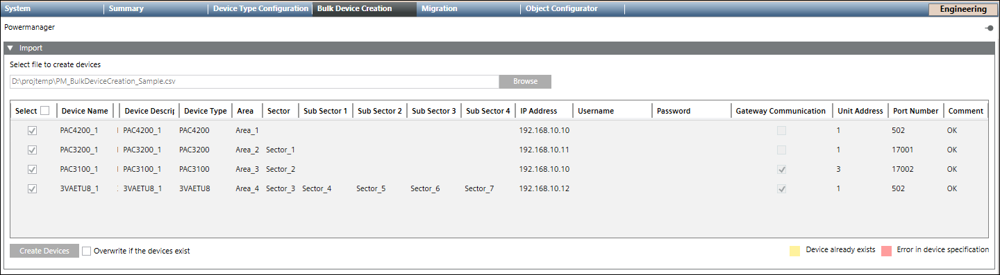

Create Powermanager Devices in Bulk
- You have created the CSV file with the information on the devices to be imported.
- Select Applications > Powermanager.
- Click the Bulk Device Creation tab.
- Click Browse.
- In the Open dialog box, select the CSV file to be imported.
- The details of the devices display.
NOTE: If the device is already present in the system, it is highlighted in yellow. If there is an error in the device specification, the device is highlighted in red. - Select the check boxes corresponding to the devices you want to import.
NOTE: Select the Overwrite if devices exist check box if you want to create the devices that are already present in the system. - Click Create Devices.

- A success message displays on successful creation of the devices. The selected devices are created and displayed in the System Browser tree according to the structure defined in the CSV file.

NOTE:
A log file is created with the details of the status of the devices in bulk device creation. You can find the log file in project log folder.
Duplicate sector names must be taken care of while adding the CSV content during bulk device creation.